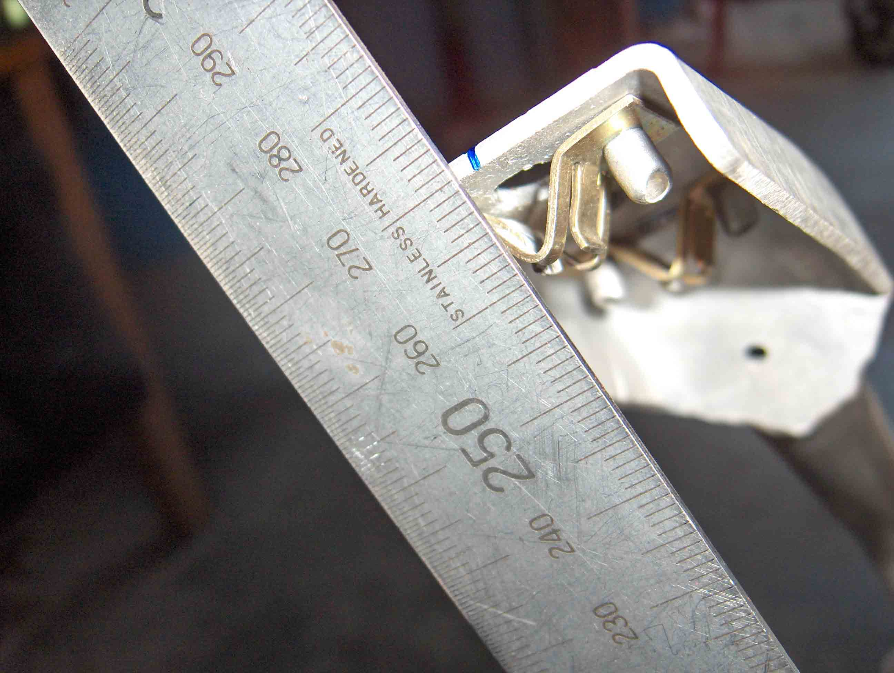

As delivered from the factory, the Tornado mirrors are a thing of beauty. Not much good for the business of seeing what's behind you though, which can come in useful if you're trying to keep one step ahead of PC Plod, or other nasties that tend to sneak up on you.
To fix the problem, the mirrors need to be rotated upwards. This could be done by fitting an angled block between the mirror base and it's front frame mounting bracket. I've seen it done (somewhere), but opted against this because the block would have to look good, being on show. It would also have to protect the cowling paint, which meant using a soft material and trying to paint it was going to be difficult. Benelli can't get paint to stick to plastic, so I reckoned I didn't stand a chance.
Another way to rotate the mirrors, as discovered by KurtP (27 May 2009), is "by placing a 2mm plastic washer on the 'upper' locating peg". Quick, but you've got to remember that washer, every time you remove the mirrors.
The method I opted for was a variation on Johnny O's. If you talk to him, he'll tell you to grab a hold of the fairing and reef it up! Apparently he's done this very thing a number of times, without breaking anything. Us mere mortals are generally not that lucky, so I went about the task of rotating the mirrors in a slightly different manner.
Take the fairing off to reveal the 2 aluminium upper front frame arms (from memory they are 16mm tubes). Mark a centre line on each mirror bracket, as shown in blue below. These will be used as reference marks.
|
|
|
Measure the distances between the centre of the front frame top mounting bolt and the reference marks on each side. Then fit a steel tube over the arms and gently bent them back! About 10mm should be enough. The pictures below show the resultant measurements. 268mm on each side. The picture for the left shows 270, but the ruler was 2mm below the centre of the bolt when I took the shot.
|
|
 |
(NB: [Below] The Pro-Oiler reservoir & bracket can be seen on the right side of the steering head)
|
|
 |
Finally, check the distance between the left & right reference marks. Mine is 325mm.
 |
|
Refitting the fairing will not be quite as easy as before, but still acceptable. The mirrors, however, should now be at a suitable angle to see what's behind you (not what's under you!)
grayVTWIN (Mike), from the Benelliforum, is able to cut one for you. Do a search for "Broken Mirror Glsass". (Yep, that's the correct spelling ....)
If you've broken one they are really difficult to procure so your only course of action may be to replace them with an alternative.
In this case,
StingerWolf reckons AirCuts fit the bill. He's seen them on a couple of Tornados and the look ok. Apparently.
Available from Polo.
Check out the discussion on the Benelliforum.
There are a couple more possibilities.